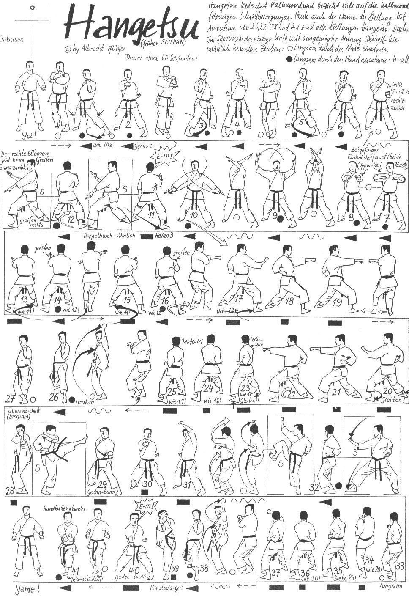

Hangetsu

- Yoi e vado in Hachiji Dachi.
- Avanzo con il piede destro, eseguendo un movimento semicircolare, per una larghezza poco superiore alle spalle; busto frontale con i piedi paralleli girati a 45° verso l’interno rispetto alla direzione del busto (Hangetzu Dachi). Contemporaneamente, seguendo il ritmo della respirazione lenta e profonda, eseguo inspirando Uchi Uke destro ed espirando Gyaku Tzuki.
- Avanzo in Hangetzu Dachi sinistro e come sopra eseguo Uchi Uke sinistro inspirando e Gyaku Tzuki espirando.
- Avanzo in Hangetzu Dachi destro e come sopra eseguo Uchi Uke destro inspirando e Gyaku Tzuki espirando.
- Tenendo fermo Tzuki sinistro inspiro ed eseguo Oi Tzuki espirando.
- Richiamo entrambe i pugni al petto tenendo i gomiti paralleli al terreno inspirando e li rilascio in Ren Tzuki Ippon Ken espirando.
- Proseguo il movimento inspirando ed eseguendo doppio Uchi Uke Jodan a mano aperta, concludo la sequenza espirando ed eseguendo doppio Yoko Gedan Barai con le mani aperte.
- Mawatte in Hidari Hangetzu Dachi, eseguo Hidari Haito Uke Chudan e Migi Shuto Uke Gedan. Kiai.
- Ruotando il polso della mano sinistra eseguo una presa.
- Avanzo in Migi Hangetzu Dachi, eseguo Migi Haito Uke Chudan e Hidari Shuto Uke Gedan. Ruotando il polso della mano destra eseguo una presa.
- Avanzo Hidari Hangetzu Dachi, eseguo Hidari Haito Uke Chudan e Migi Shuto Uke Gedan. Ruotando il polso della mano sinistra eseguo una presa.
- Ruoto verso destra di 90° in Migi Hangetzu Dachi ed eseguo Uchi Uke destro seguito da Ren Tzuki.
- Mawatte in Hidari Hangetzu Dachi ed eseguo Uchi Uke sinistro seguito da Ren Tzuki.
- Ruoto verso destra di 90° in Migi Hangetzu Dachi ed eseguo Uchi Uke destro seguito da Ren Tzuki.
- Mawatte in Hidari Kokutzu Dachi eseguendo Gyaku Mikazuki Geri sinistro e Otoshi Uraken Uchi Chudan sinistro.
- Un passo avanti scavalcando il piede sinistro ed eseguo Mae Geri sinistro, Soto Uke sinistro, Gedan Barai Sinistro, Gyaku Tzuki destro, Age Uke sinistro.
- Mawatte in Hidari Hangetzu Dachi ed eseguo Uchi Uke sinistro seguito da Ren Tzuki.
- Mawatte in Migi Kokutzu Dachi eseguendo Gyaku Mikazuki Geri destro e Otoshi Uraken Uchi Chudan destro.
- Un passo avanti scavalcando il piede destro ed eseguo Mae Geri destro, Soto Uke destro, Gedan Barai destro, Gyaku Tzuki sinistro, Age Uke destro.
- Mawatte in Hidari Kokutzu Dachi eseguendo Gyaku Mikazuki Geri sinistro e Otoshi Uraken Uchi Chudan sinistro.
- Haishu Uke sinistro.
- Mikazuki Geri destro a colpire il palmo.
- Riporto la gamba destra indietro ed eseguo Gyaku Tzuki Gedan. Kiai.
- Richiamo la gamba sinistra nella posizione del gatto (Neko Ashi) e porto entrambe i pugni ai fianchi.
- Eseguo a 45° sulla sinistra una parata bassa con entrambe le mani aperte tenendo uniti solo i polsi (Teisho Awase Uke) sguardo frontale.
- Yame! Allargo la gamba sinistra e torno in posizione di Yoi!